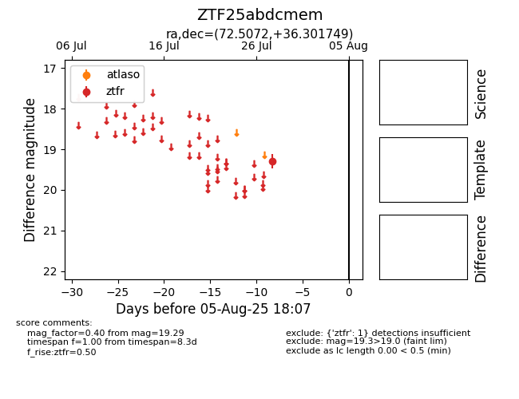

Target ZTF25abdcmem at 2025-08-05 18:07, see:
FINK: fink-portal.org/ZTF25abdcmem
Lasair: lasair-ztf.lsst.ac.uk/objects/ZTF25abdcmem
ALeRCE: alerce.online/object/ZTF25abdcmem
alt names
ZTF25abdcmem (ztf,fink)
coordinates:
equatorial (ra, dec) = (72.5072,+36.30175)
galactic (l, b) = (167.2340,-5.30617)
photometry
last ztfr=19.29
1 ztfr detections
